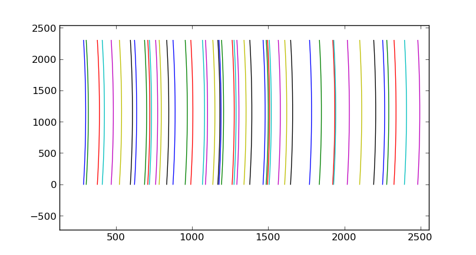

We want to have a 2D function that allows us to get wavelengths in any area of the ARC image. The procedure to fit a function to the image is:
Example ------- Given an ARC image determine the wavelengths of a region in the image. from astrodata import AstroData from wavecal import Wavecal ad = AstroData('N20011112S064.fits') wc = Wavecal(ad) # Fit a 3D Chebyshev function of order 4. wc.fit_image() # Compute wavelengths from a set of points for row 500. # The eval function is of the form 'w = wc.zz(x_array, y_array)' print wc.zz([2000,2010,2030], 500) # Verify than the wavelength is the same along an ARC. The attribute to # calculate pixel positions for peaks is the list 'zpeaks'. ny,nx = wc.imdata.shape yy = range(10,ny,50) # Calculate the pixel coordinates for these rows for arc number 6 xx = wc.zpeaks[5](yy) # Display the wavelengths. print wc.zz(xx,yy) # Plot the fitted arcs. wc.plot_arcs()The plot above shows the fit function for each of the arcs in the image. Notice that not all arcs are shown since some of the fits have been rejected following a 3-sigma rejection schema for each of the function coefficients.